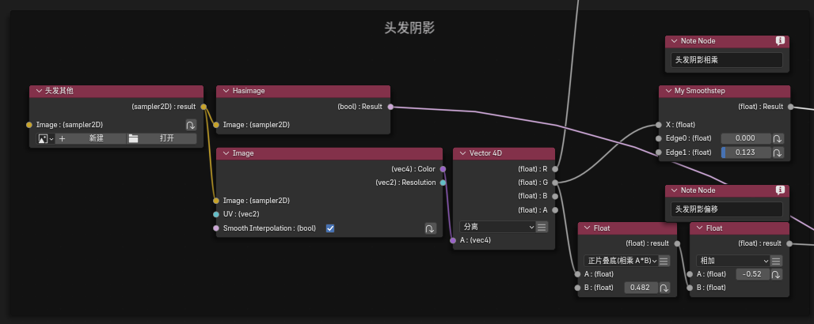
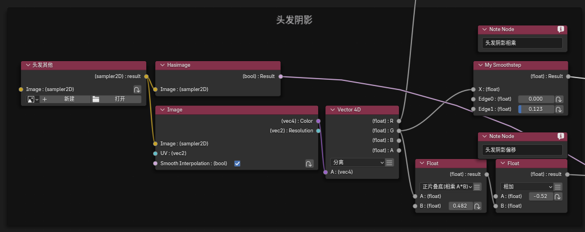

贴图构成及光影
这个章节里将创建基本的光影效果,并且简单介绍一下鸣潮里的贴图构成
注意
贴图类型及用法存在大量主观推测,可能非实际用法,仅供参考
贴图
 贴图构成
贴图构成
鸣潮中一个角色包含5种类型的贴图:
_D后缀
基础色
 Alpha通道
Alpha通道
_D后缀的贴图记录了基础色,透明度以及固定阴影,其中的Alpha通道分为两种情况
- 如果是透明物体,则表示透明度
- 如果是不透明物体,则表示永远为阴影的部分的固有阴影
_N后缀
 R,G 法线
R,G 法线
 B 金属度
A 粗糙度
B 金属度
A 粗糙度
_D后缀的贴图记录了法线,金属度,粗糙度
- R,G通道记录了法线信息
- B通道记录了金属度信息
- A通道记录了粗糙度信息
绿色法线的使用方法
法向是一个单位向量，利用长度为1可以还原出原本的法线
normal = vec3(xy.x, xy.y, sqrt(1-clamp(dot(xy, xy),0.,1.)))*0.5+0.5;
需要注意的是,计算Z通道时需要先将R,G通道的数值转换成-1到1的区间
_ID后缀
 ID贴图
ID贴图
没啥好说的,就是一个ID贴图,用来抠出不同的部位
_HM后缀
 R 高光
G通道
R 高光
G通道
_HM后缀的贴图是头发专属的贴图,R通道是高光,G通道看着像头发的阴影,或者是阴影偏移(Shadow Offset)(?存疑)
_Skin后缀
Ramp
Ramp图,用来映射阴影颜色
用NdotL映射x轴,不同的ID映射y轴
这里的颜色和游戏里的不太一样,可能是额外改过的
这个案例里没有使用到
SDF贴图
左侧为SDF的原始图像,鸣潮的SDF分在三个通道里存储,需要手动合成一下,将R,B,A三个通道相加取平均即可
\(SDF=(T.R+T.B+T.A)/3\)
G通道用途未知
Eye贴图
Eye贴图
其中的R通道看着像高光,但是我加上去发现和游戏里的不一样,折腾了好久还是不知道怎么弄,只能作罢
案例里的高光是手动添加上去的
UV
鸣潮的模型一共有四张UV,分别是:
- UV0: 用于映射贴图
- UV1: 使用八面体压缩的方式存储的平滑法线,用于描边(眼睛并不是)
- UV2: 和
UV0是一样的
- UV3: 存储了静止姿态时的世界位置
UV0
UV1
UV2
UV3
解码的平滑法线
虽然我们使用Malt时不会用外扩法线的方式去做描边,也就用不到UV1,但是这里还是提一下怎么使用,毕竟做都做了
法线的压缩方式可以参考文章
| vec3 Decode(vec2 f){
f-=vec2(0.,1.);//移到原点
vec3 n=vec3(f.x,f.y,1.-abs(f.x)-abs(f.y));
float t=clamp(-n.z,0.,1.);
n.x+=(n.x>=0.)?-t:t;
n.y+=(n.y>=0.)?-t:t;
return normalize(n);
// return normalize(n)*0.5+0.5; // 0~1范围的法线贴图
}
|
这样就得到了平滑的法线矢量,将其变换到世界空间就可以在描边上使用了
顶点色
角色有一个顶点色,由于没有找到相关的讨论,不太清楚是干什么用的,感觉都和描边有关
R
 G
G
B
 A
A
创建阴影
法线转换
在创建阴影前先处理法线贴图,下面这个函数是补全法线贴图并添加缩放参数控制法线的强度
函数内容大概是:
- 将法线映射到[-1,1]
- 添加缩放参数
- 计算出z分量
- 再映射回[0,1]
- 将其他两个通道原样输出
1
2
3
4
5
6
7
8
9
10
11
12
13
14
15 | //采样绿色法线
/* META
@UV: label=UV; default=UV[0];
@scale: default=1.0;
*/
void Smapler_green_normal(in sampler2D tex, in vec2 UV,in float scale, out vec3 normal,out float tex_b,out float tex_a)
{
vec4 tex_color = texture(tex, UV);
vec2 xy=tex_color.rg*2.0-1.0;
xy*=scale;
normal = vec3(xy.x, xy.y, sqrt(1-clamp(dot(xy, xy),0.,1.)));
normal = normal*0.5+0.5;
tex_b = tex_color.b;
tex_a = tex_color.a;
}
|
另外用到的一个工具函数是HasImage,用来判断是否有输入贴图,因为有些物体是没有法线贴图的
| void HasImage(in sampler2D Image, out bool result)
{
result = textureSize(Image, 0).x > 1;
}
|
 输出的法线
节点图
输出的法线
节点图
使用内置的Tangent To World Normal节点,将切线空间的法线转为世界空间
使用HasImage判断有没有输入法线贴图,如果没有就使用默认的法线
二分阴影
 固有阴影
头发阴影
固有阴影
头发阴影
AO
光照阴影
- 使用
smoothstep选出_D贴图的Alpha通道的阴影部分
- 使用
smoothstep选出_HM贴图的G通道的阴影部分
- 使内置的
Ambient Occlusion节点和smoothstep选取AO部分
- 使用
NPR Diffuse内置着色器输出光照阴影
最后使用最小值min合并所有的阴影
对于透明物体的Alpha通道真的是透明,所以需要一个变量手动指定哪些部分是透明的
对于头发专有的贴图部分,也要用HasImage去混合一下
在NPR Diffuse中,使用一个参数控制Gradient Size可以控制阴影的软硬
阴影偏移Shadow Offset
阴影偏移指的是用贴图控制二分的阈值,增加阴影交界处的细节
使用smoothstep调整_HM贴图的G通道,并连接到NPR Diffuse的Offset去控制阈值
 阴影偏移关
阴影偏移开
阴影偏移关
阴影偏移开
 节点图

头发部分
阴影
节点图

头发部分
阴影
最后得到的应该是一个这样的黑白阴影
阴影着色
创建完黑白的阴影图之后,我们需要将阴影叠加到颜色贴图上
这里用一个函数给阴影映射上颜色,这里拆分成两段线性(1)的渐变三种颜色,是为了能给阴影的交界处单独着色
- 你也可以换成其他的更平滑的映射
将阴影色和中间色暴露给材质,这样就能为每个材质指定不同的颜色
最后直接与颜色贴图相乘,就完成了阴影的添加
1
2
3
4
5
6
7
8
9
10
11
12
13
14
15
16
17
18
19
20
21
22
23
24
25
26
27
28
29
30
31 | //三种颜色的渐变
/* META
@position1: subtype=Slider;default=0.0;min=0.0;max=1.0;
@position2: subtype=Slider;default=0.5;min=0.0;max=1.0;
@position3: subtype=Slider;default=1.0;min=0.0;max=1.0;
@color1: default=(0.0, 0.0, 0.0);
@color2: default=(0.5, 0.5, 0.5);
@color3: default=(1.0, 1.0, 1.0);
*/
void ramp_3colors(in float x,in float position1,in vec3 color1,
in float position2,in vec3 color2,
in float position3,in vec3 color3,
out vec3 result)
{
if (x <= position1) {
result = color1;
}
else if (x >= position3) {
result = color3;
}
else if (x <= position2) {
// 在 [position1, position2] 区间进行 color1 → color2 插值
float t = (x - position1) / (position2 - position1);
result = mix(color1, color2, t);
}
else {
// 在 [position2, position3] 区间进行 color2 → color3 插值
float t = (x - position2) / (position3 - position2);
result = mix(color2, color3, t);
}
}
|
 阴影着色
阴影着色
 直接相乘
直接相乘
SDF
对于脸部的这种比较重要的部位,如果直接使用默认的光影,那么脸部的阴影将会是非常杂乱切不连续的
尽管鸣潮的模型已经做了脸部的平面法线,但如果想更精细的控制脸部阴影还是需要使用SDF贴图
SDF是一张记录着各个角度时阴影分界线的阈值图
在日光和脸的夹角在不同的角度时取不同的阈值,用这个阈值对SDF图进行截取,就可以获得阴影边界了
当日光方向和面部方向相反时(正光夹角为180°),阈值为0,全为亮面
当日光方向和面部方向相同时(背光夹角为0°),阈值为1,全为暗面
所需的图大致如图A所示,圆圈表示不同角度的日光方向时的阈值
而我们输入的夹角将图B一样,需要将B图映射为A图
 A 需要的输出的值
A 需要的输出的值
 B 角度的输入
B 角度的输入
C mod(angle, 2.0*PI)-PI
 D -cos(angle)
D -cos(angle)
先取2π模,这是为了将较大的角度都映射到[0,2π],然后再-π
最后用cos就可以把角度映射到[-1,1]图D,再*0.5+0.5就可以映射到[0,1]我们需要的值了
SDF只记录了一侧光照的信息,左右两侧是对称的,需要根据光照方向进行切换
不能使用dot去获取两个矢量的夹角,因为dot获取不到夹角的正负值,这里用arctan2函数来获取夹角,这是具有正负值的
翻转uv,采样两张不同方向的SDF图,然后根据angle的正负值去选择需要哪一边的SDF
使用smoothstep根据阈值选出分界线,还可以加入smoothness参数控制交界的平滑度
用到的函数:
| SDF |
|---|
1
2
3
4
5
6
7
8
9
10
11
12
13
14
15
16
17
18
19
20
21
22
23
24
25
26
27
28
29
30
31
32
33
34
35
36
37
38
39
40 | //输入日光方向和面部方向,输出一个SDF用的角度
void DirToSDFAngle(in vec3 face_dir,in vec3 sun_dir,out float angle)
{
face_dir = normalize(face_dir*vec3(1,1,0));//转换为水平平面的矢量
sun_dir = normalize(sun_dir*vec3(1,1,0));//转换为水平平面的矢量
float face_angle = atan(face_dir.y, face_dir.x);
float sun_angle = atan(sun_dir.y, sun_dir.x);
sun_angle = mod(sun_angle-PI/2.0, 2.0*PI);
face_angle = mod(face_angle+PI/2.0, 2.0*PI)-PI;
angle= sun_angle-face_angle;
}
//输入一个角度和SDF图,输出一个二分阴影的mask
/* META
@UV: label=UV; default=UV[0];
@smoothness: subtype=Slider;default=0.02;min=0.0;max=1.0;
*/
void toon_sdf_mask(in sampler2D SDF, in vec2 UV,in float angle,in float smoothness,in float offset, out float mask,out float SDF_R,out float SDF_G,out float SDF_B,out float SDF_A)
{
vec4 SDF_RIGHT = texture(SDF, UV);
float SDF_R_F =( SDF_RIGHT.r+SDF_RIGHT.b+SDF_RIGHT.a)/3.0+offset;
vec4 SDF_LEFT = texture(SDF, vec2(1.0-UV.x, UV.y));
float SDF_L_F =(SDF_LEFT.r+SDF_LEFT.b+SDF_LEFT.a)/3.0+offset;
angle =mod(angle, 2.0*PI)-PI;
float Threshold = -cos(angle)*0.5+0.5;
if (angle>0.0)
{
mask = smoothstep(Threshold-smoothness,Threshold+smoothness,SDF_R_F);
}
else
{
mask = smoothstep(Threshold-smoothness,Threshold+smoothness,SDF_L_F);
}
SDF_R = SDF_RIGHT.r;
SDF_G = SDF_RIGHT.g;
SDF_B = SDF_RIGHT.b;
SDF_A = SDF_RIGHT.a;
}
|
 节点图
节点图
将输出的mask与之前的阴影取最小值即可
如何传递数据到Shader内
那么问题来了.怎么将面部方向和日光方向传入Shader中去
驱动器
一个简单的方法是使用驱动器,将日光的旋转复制驱动器到矢量旋转里,这样就可以获得方向
但是这样不够优雅(bushi)
使用驱动器
接下来介绍一种奇技淫巧的方法将数据传入shader中
灯光传递
Shader中是可以读取到灯光的,所有的灯光都会在一个灯光数组内,我们只需要在shader中找到绑定在脸上的灯光,然后读取它的方向,日光也是一样的
所有的灯光都在LIGHTS.lights数组里,每个项都是一个结构体,结构体里存储了灯光的各种信息,需要设置一些过滤条件,就可以找到需要的灯光
下面这个函数会根据条件是否相等过滤灯光,如果输入为0,则不启用这个条件
因为LIGHTS.lights只在MESH_SHADER有效,所以加了宏定义防止报错
节点组还用日光的亮度去混合SDF的强度,如果日光亮度为0,就不使用SDF了
 节点图
将一个聚光绑定到脸上
节点图
将一个聚光绑定到脸上
| find_light |
|---|
1
2
3
4
5
6
7
8
9
10
11
12
13
14
15
16
17
18
19
20
21
22
23
24
25
26
27
28
29
30
31
32
33
34
35
36
37
38
39
40
41
42
43
44
45
46
47
48
49
50
51
52
53
54
55
56
57
58
59
60
61
62
63
64
65
66
67
68
69
70
71
72
73
74
75
76
77
78
79
80
81
82
83
84
85
86
87
88
89
90
91
92
93
94
95
96
97 | #if defined(IS_MESH_SHADER) || defined(IS_SCREEN_SHADER)
#ifdef IS_MESH_SHADER
/* META
@position: subtype=Vector; default=(0.0,0.0,0.0);
@color: default=(0.0,0.0,0.0);
@strength: default=0.0;
@type: default=0;
@direction: default=(0.0,0.0,0.0);
@spot_angle: default=0.0;
@spot_blend: default=0.0;
@light_groups: default=MATERIAL_LIGHT_GROUPS;
*/
#else
/* META
@position: subtype=Vector; default=(0.0,0.0,0.0);
@color: default=(0.0,0.0,0.0);
@strength: default=0.0;
@type: default=0;
@direction: default=(0.0,0.0,0.0);
@spot_angle: default=0.0;
@spot_blend: default=0.0;
@light_groups: default=ivec4(1,0,0,0);
*/
#endif
void find_light(
in vec3 position,
in vec3 color,
in float Strength,
in int type,
in vec3 direction,
in float spot_angle,
in float spot_blend,
in float radius,
in ivec4 light_groups,
out bool found, // 是否找到
out Light L // 找到的灯光
// *灯光过滤函数，根据灯光属性进行过滤，返回找到的第一个满足条件的灯光
)
{
L.position = vec3(0.0);
L.direction = vec3(0.0, 0.0, -1.0);
L.color = vec3(0.0);
L.type = 0;
L.spot_angle = 0.0;
L.spot_blend = 0.0;
found = false;
spot_angle = radians(spot_angle);
spot_blend = radians(spot_blend);
for (int i = 0; i < LIGHTS.lights_count; i++)
{
Light L_temp = LIGHTS.lights[i];
// 灯光分组匹配
bool group_match = false;
for(int g = 0; g < 4; g++)
{
if(light_groups[g] == 0 || LIGHT_GROUP_INDEX(i) == light_groups[g])
{
group_match = true;
break;
}
}
if(!group_match) continue;
//判断条件
// 位置判断
if(length(position) > 0.0 && distance(L_temp.position, position) > 0.001) continue;
// 颜色判断
if(length(color) > 0.0 && distance(L_temp.color, color) > 0.001) continue;
float light_strength = max(max(L_temp.color.r, L_temp.color.g), L_temp.color.b);
// 强度判断
if(Strength != 0 && light_strength != Strength) continue;
// 类型判断 1:日光 2:点光 3:聚光
if(type != 0 && L_temp.type != type) continue;
// 方向判断
if(length(direction) > 0.0 && distance(L_temp.direction, direction) > 0.001) continue;
// 聚光角度判断
if(spot_angle > 0.0 && abs(L_temp.spot_angle - spot_angle) > 0.001) continue;
// 聚光混合判断
if(spot_blend > 0.0 && abs(L_temp.spot_blend - spot_blend) > 0.001) continue;
// 半径判断
if(radius > 0.0 && distance(position, L_temp.position) > radius) continue;
// 找到第一个满足条件的灯光
L = L_temp;
L.direction=-L.direction;
found = true;
break;
}
}
#endif
|
刘海投影
 效果图
效果图
刘海投影留到下章再讲,就是获取刘海蒙版然后往下偏移